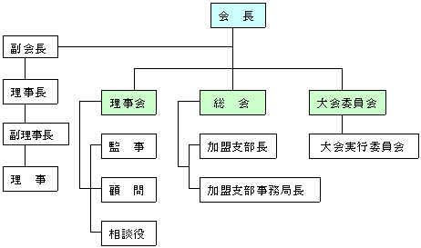

97年受け継がれてきた、 日本腕相撲協会の歴史と精神をご紹介します。
写真中央の翁は、 腕相撲を近代スポーツとして築き上げた創始者であり、 本協会の創立者でもあり、 今日の礎を築いた開祖であります。 会長である私、 山本哲也の祖父でもあります。
明治に生まれ、 大正、昭和と永きに渡り、 85歳に至るまで現役歯科医師として地域医療に貢献し得たのも、 持論である 「生涯スポーツである腕相撲」 を実践してきた賜物と思っております。
平成14年（2002年）、 102歳で亡くなる直前まで、 その矍鑠（かくしゃく）とした姿は、 「継続は力なり」を自ら体現し、 私を含め門下に この大いなる精神と力を与えてくれました。
会発足以来97年、 開祖亡き後も、 その精神・理念は、 いかばかりも失う事なく 今日に受継がれています。
日本腕相撲協会の歴史と全国支部発展の歩み
| 年 | 出来事 | 備考 |
|---|---|---|
| 昭和3年1928 | 「横浜腕の会」発足 | 会長 山本哲 |
| 昭和9年1934 | 大日本腕角力協会創立 | 当時は腕相撲を腕角力と表記 |
| 昭和11年1936 | 第1回全国大会開催 | 朝日新聞横浜支局後援 |
| 昭和12年1937 | 福岡支部発足 | 現在休部 |
| 昭和13年1938 | 著書「国民体育運動としての腕角力」発刊 | 著者 山本哲 |
| 昭和15年1940 | 横浜市民腕相撲大会開催 | 日本初大規模腕相撲大会開催 |
| 昭和21年1946 | 岩手県支部発足 | 現在休部 |
| 昭和28年1953 | 日本腕相撲協会に名称変更 | 世田谷区九品仏に本部設立 |
| 昭和41年1966 | 新潟県支部発足 | 長岡市（現在休部） |
| 昭和45年1970 | 千葉県支部発足 | 山武市（現在休部） |
| 昭和53年1978 | 著書「腕相撲」発刊 | 著者 山本哲 |
| 昭和54年1979 | 愛知県支部発足 | 日進市にて活動中 |
| 昭和62年1987 | 岐阜県支部発足 | 郡上市白鳥町にて活動中 |
| 昭和63年1988 | 静岡県支部発足 | 静岡市にて活動中 |
| 平成元年1989 | 長野県支部発足 | 上高井郡高山村にて活動中 |
| 平成3年1991 | 大田支部発足 | 東京都大田区（現在休部） |
| 平成8年1996 | 神奈川県支部発足 | 横浜市にて活動中 |
| 平成10年1998 | 埼玉県支部発足 | 加須市にて活動中 |
| 平成16年2004 | 宮城県仙台支部発足 | 仙台市（現在休部） |
| 平成19年2007 | 八潮支部発足 | 八潮市（現在休部） |
| 平成24年2012 | 名古屋支部発足 | 名古屋市にて活動中 |
| 平成25年2013 | 東京福生支部発足 | 福生市にて活動中 |
| 令和7年2025 | 山梨支部発足 | 山梨県山中湖村にて活動中 |
| 令和7年2025 | 三重県支部発足 | 三重県鈴鹿市にて活動中 |
昭和9年3月 制定 ／ 昭和28年4月 改正 ／ 平成19年5月 改正
第1条 この協会は、日本腕相撲協会（以下「本協会」という）と称する。
第2条 本協会の本部道場所在地は東京都世田谷区等々力4-21-1に置き、本部事務局所在地は東京都目黒区自由が丘1-13-4-503に置く。
第3条 本協会は、加盟支部の連携・協力を促進し、次の理念に基づき、本協会腕相撲の普及と発展を図る事を目的とする。
第4条 本協会は、前条の目的を達成する為に、次の事業を行うものとする。
第5条 本協会は、本協会本部、本協会が認定する支部及び本協会員、本協会の理念に賛同する個人で組織する。
第6条 本協会に加盟を希望する団体は、理事会の決議を経て加盟することができる。加盟団体が休会・脱会する時は、理事会の承認を受けなければならない。
第7条 本部・各支部の本協会員は、昇級昇段試合及び各腕相撲大会出場時、別に定める出場費を納入しなければならない。
第8条 本部・各支部の本協会員は、別に定める自治会費を納入しなければならない。
第9条 本協会に次の役員を置く。
第10条 本協会の役員は、次の方法により選出する。
第11条 本協会の役員の任務は、次の通りとする。
第12条 本協会の役員の任期は、次の通りとする。
第13条 本協会に、顧問、相談役を置く事ができる。
第14条 本協会に次の会議を置く。
第15条 会議は、必要に応じて会長がこれを招集し、次の者を議長とし、審議決定する。
第16条 会議は、2分の1以上の出席をもって成立し、議事は出席者の過半数をもって決定する。可否同数のときは議長がこれを決める。
第17条 本協会の経費は、本部協会員自治会費、昇級昇段試合出場費、各腕相撲大会出場費、寄付金及びその他をもってこれに充てる。
第18条 本協会の会計年度は、毎年1月1日に始まり、同年12月31日に終わる。
第19条 本協会の会員としてふさわしくない行為があったときは、理事会の3分の2以上の議決を経て、会員を除名することができる。
第20条 本規約の改正は、理事会の3分の2以上の議決を経て、改正できる。
第21条 本規約に明示なき事項は、理事会の3分の2以上の議決を経て、決定し、総会に報告する。
第22条 本規約は、平成19年5月1日からこれを施行する。

「継続は力なり」
97年に渡り受け継がれてきた精神があります。
礼を重んじ、
人との和を忘れず、
己を磨き続けること。
それが、
日本腕相撲協会の理念です。